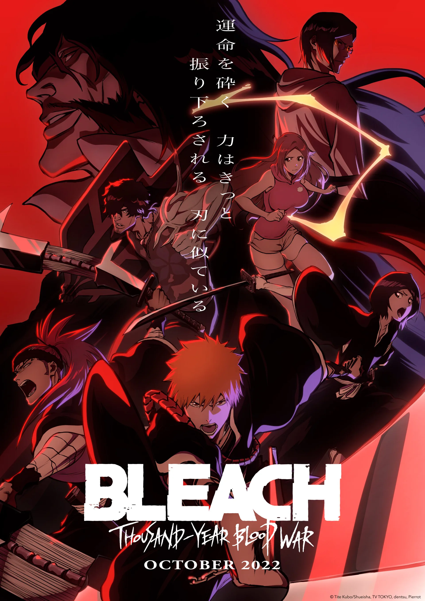

Bleach

Bleach é uma série de mangá e anime criada por Tite Kubo. Lançada no Japão, conta a história de Kurosaki Ichigo, um estudante de 15 anos, que se torna um shinigami (Deus da morte), após seu encontro com Kuchiki Rukia, e passa a enfrentar Hollows, espíritos que se tornaram malígnos, e, pouco a pouco, conhecer o mundo dos shinigamis. Bleach foi eleito o melhor anime do Japão por 3 anos seguidos 2004, 2005 e 2006 e um título de melhor do mundo em 2006. Atualmente o anime alcançou os 184 episódios. No mangá já foram lançados 322 capítulos e mais algumas histórias extras.